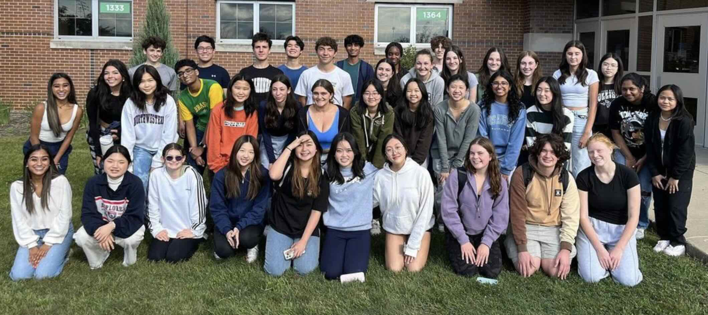

Academics
During my time at Glenbrook South High School, I have taken a rigorous college preparatory curriculum that includes Algebra 2, Precalculus, Advanced Placement (AP) Calculus, Biology, Chemistry, Physics, Computer Science Honors, AP Computer Science, and Foundational Artificial Intelligence. My favorite subjects are math and science. I am now aiming to pursue an undergraduate degree in computer science with the ultimate objective of earning a PhD and becoming a university professor.
Medical Chapter Club

Driven by the desire of discovering the intersection between STEM and medicine, I am have taken up the role of
Technology Director on the Medical Chapter Club board, where I am entrusted with the responsibility of maintaining the
club's website, bringing in accomplished guest speakers, and expanding the club's reach, through online platforms, to a wider audience of students.
For more information, please
visit our Instagram page.
CS Honor Society
TBD